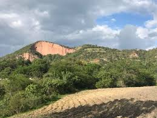
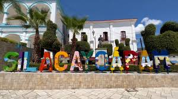
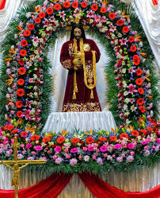
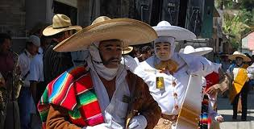
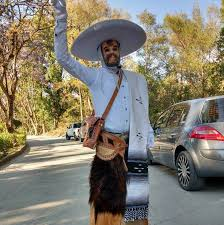

En esta pagina les compartire un poco sobre la historia de las tradiciones de SILACAYOAPAMA

video de silacayoapam
FIESTA DE PADRE JESUS
Nosotros inicimos el año con la fieta de padre jesus lo cual inicia el primero de enero
con la primera mayordomia se organiza para adornar la iglesia el dia que le correspondan
realizando las visperas y la quema del castillo y juegos artificiles y el dia 2
se le celebra la misa, el mismo dia apartir de las 12 entra otra mayordomia y se realza
un cambio de flores y areglos a la iglecia y haci hasta culminar al dia 17
con el baile de los santigos que se lleva acabo el 17 y 18 en la noche se saca a procion
a la imagen de padre jesus por las calles de la poblacion y el 18 es el baile de los santiagos

video de los santiagos
carnaval

El carnaval es el que marca la pauta de la siguente temporada antes de semana santa
tres dias de carnaval iniciando el primero dependiendo de que mes caiga semana santa puede ser febreo o marzo
Estos dias nos visitan paisanos que vienen de estados unidos o mexico y de otros lugares
podemos presumir que es un carnaval que no se festega en ningun otro lugar eso es lo que lo hace tan especial
y tan diferentes de otros lugares, el cual inicia a las 9:00 de la mañana y termina a las 2:00 de la tarde
en lo que los danzanetes se van a comer los musicos cambian de lugar inician a las 4:00 de la tarde
y termina a las 9:00 de la noche si se portan bien a las 10:00 de la noche este año nuestro carnaval
trascurrio de forma mu tranquila y con muchisima gente .
video de carnaval
